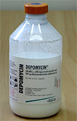
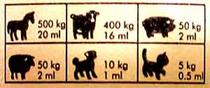
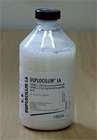
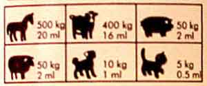
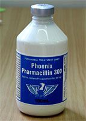
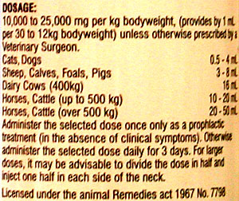

Case Scenarios
You are called to examine a 5-year-old Stallion showing signs of colic. On initial examination the horse has a heart rate of 70 bpm, rectal temperature of 36.9°C, respiratory rate of 28, injected and dry mucous membranes with a CRT of 2.5 seconds, cold extremities and reduced gut sounds over all four abdominal quadrants. You are concerned that the horse may have an obstruction and would like to confirm this by passing a nasogastric tube and performing an examination per rectum. However, despite the severity of clinical signs, the stallion is difficult to handle and requires sedation. Outline your sedation options in this case and their potential complications.
You have been called to examine an 8-hour-old thoroughbred filly that appeared normal at birth. However, the foal has become progressively dull and depressed over the last few hours. When you arrive the foal is in lateral recumbency and is seizuring. Given the urgency of the situation you choose to control the seizures before performing a physical examination.
What are your treatment options for controlling seizures in foals? Considering the potential causes of seizures in foals, what other drugs may be needed in this case? Please outline the risks and benefits of the drugs you have chosen.
Your neighbour's pony is a 26-year-old Welsh Mountain Pony that over the last 2 years has failed to shed its winter coat, has lost weight and has recurrent episodes of laminitis. You are suspicious the pony may have Pituitary Pars Intermedia dysfunction (PPID). There are several screening tests available that use drugs to help confirm this diagnosis. Please outline these tests and their potential risks and benefits. Many horses with PPID have been successfully managed with drugs. Please outline the different drugs available for treatment of this condition, their mechanisms of action, and also the potential cost to the client for each treatment.
You are a locum vet working a weekend. The practice car is fully stocked for you. You attend a horse with a wound 5 cm long and of 2 hours duration, caused by contact with a sharp piece of corrugated iron. It is on the lateral aspect of the chest and on careful inspection and palpation you determine it involves only skin, subcutis and superficial muscle. Wound edges are sharp, gaping by 8mm, there are no debris in the wound. You flush, debride the edges and suture it in two layers under sedation and local analgesia.
List the drugs you would use in the whole procedure you have undertaken. Justify the reason for use of each particular class of drug you use, and which particular drug in each class.
Concerning antibiotics, in the car there is procaine penicillin and long acting PenStrep. Which would you use and why? State exactly the regimen (this means exact name of drug, amount, volume, route, site, frequency and duration of therapy).
The wound heals absolutely perfectly, and you remove the sutures 10 days later. What contribution to wound healing do you think the antibiotic regimen had?
An adult horse, one of a group in a riding school, has been off feed and had a slightly elevated temperature since yesterday. The horses are kept inside at night and at pasture during the day. On examination you find a rectal temperature of 38.7 °C, HR 44 bpm, respiratory rate 48 bpm, CRT 1 sec, turgor normal, no abnormal sounds on lung auscultation, a soft cough when the trachea/larynx is palpated, and slight swelling of the lymph nodes in the throat area.
You are the vet attending. You have to make the choice of what to do – the owner says the horse obviously requires antibiotics. State what therapy you would suggest at this time for this horse, and for the other horses. Justify your choice by reference to sensible application of knowledge concerning equine upper respiratory diseases.
Here are three bottles containing different preparations of penicillin. Knowing that the suggested dose rate of penicillin in the horse is 20000 IU/kg bid, what volume of each of these preparations must you give to a 560 kg horse which has a known Streptococcus sp. upper respiratory infection?
Depomycin (Intervet)

Duplocillin (Intervet)

Pharmacillin 300 (Phoenix)

What are the other details of the regimen you propose?
How does this volume of the drug compare to what is suggested on the label or in the product insert? Why are they different? How are they arrived at?
When you inject into a muscle mass in the horse, where can you inject?
What is the approximate volume you should inject into a particular im site?
Why do you think this might matter?
What happens when a huge volume is injected at one site?
And while you are thinking of absorption from the site, does it matter which site you use, in terms of drug kinetics?
ps
Units for penicillin were abandoned in 1968 everywhere except some parts of the USA where they still linger. 1mg = about 1660 units, or 600mg = 1 megaunit.